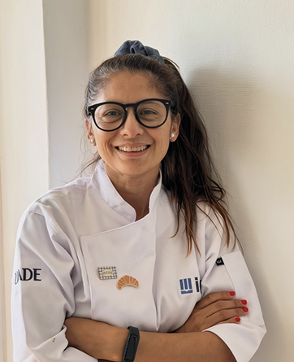

This is my story - a story about courage, starting over, and how a simple taste of home can bring people together on the other side of the world. I’m Valeria Ramírez, 49, born and raised in Argentina. Back home, I built my career from the ground up. I started as a gas station attendant at YPF and, through years of effort and discipline, worked my way up to a senior managerial role in finance, leading a team of 18 people.
In 2022, I made the biggest decision of my life: I left everything behind for love and moved to Aarhus, Denmark - a city known for its happiness, but where starting over without speaking Danish felt almost impossible. Finding a corporate job was harder than I ever imagined. Instead of giving up, I chose to reinvent myself. I began learning Danish and started baking in my apartment during my free time.
One recipe changed everything: traditional Argentine croissants (medialunas) by master baker Juan Manuel Herrera. I practiced, experimented, and eventually enrolled in an online culinary degree at the IAG institute in Buenos Aires. Baking became my new craft - patient, artisanal, and deeply connected to my roots.
What began as a personal project slowly grew into La Pony Bakery, my home-based micro bakery. Danes, used to savory French-style croissants, quickly fell in love with my fluffy, sweet-glazed Argentine medialunas. And for the 300 Argentines living in Aarhus, my pastries became an emotional bridge - the more homesick they felt, the more they ordered.
Watch my storyThe name La Pony Bakery comes from a running joke among my friends in Argentina. They used to call me that, I was so unstoppable and driven that the only way to slow me down was to knock me off my high horse ("bajarse del caballo"). I embraced the joke with humor, turning "The Pony" into a symbol of trading corporate hustle for hand-laminated baking patience